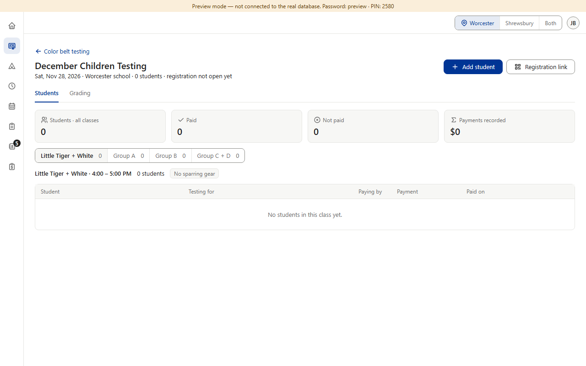
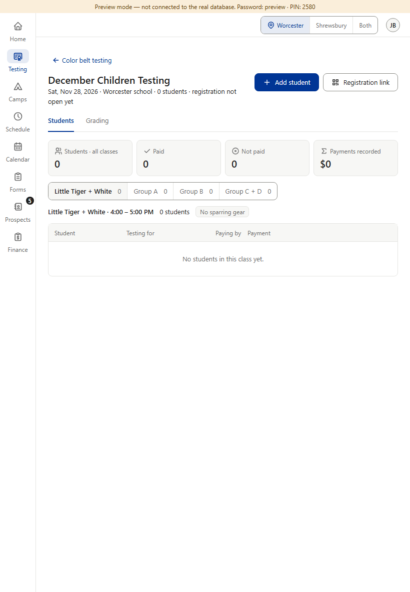
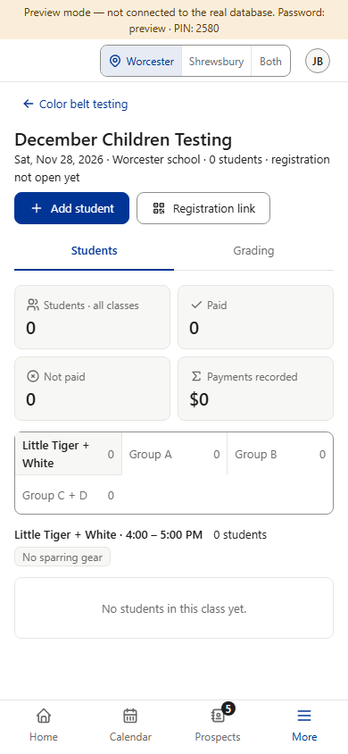
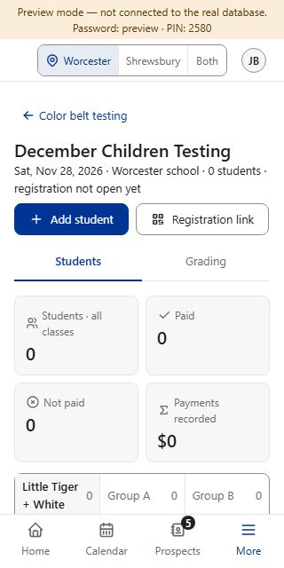
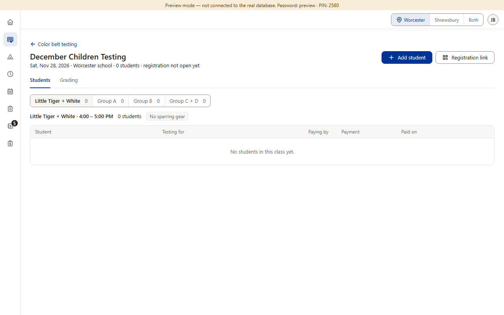
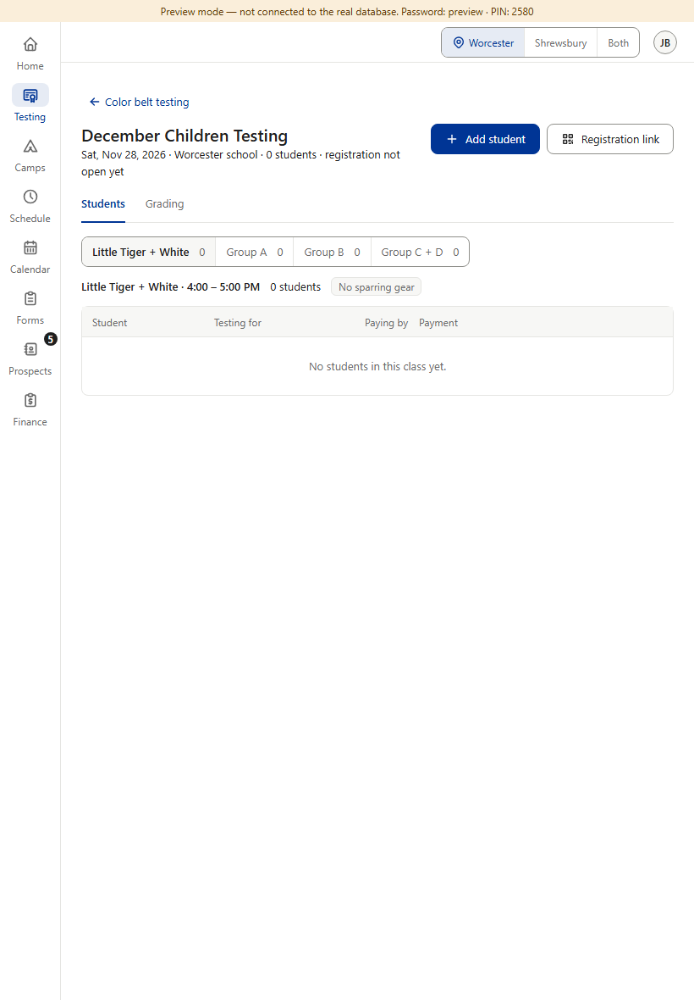
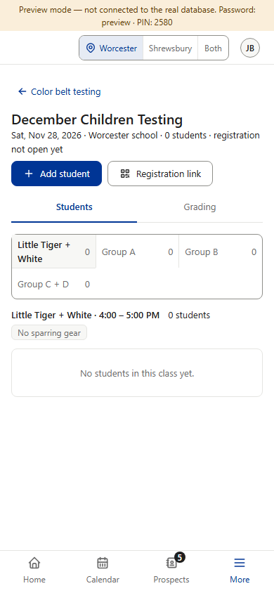
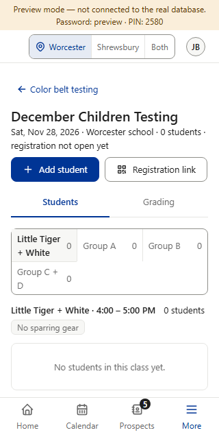

Rule v1.028 (§8 Empty states: an empty list shows one line), and the same as your own Private testing tab, Star and Camps: the four cards (Students · Paid · Not paid · Payments recorded) are drawn only once the event has a registration, active or removed. With nobody, the page goes straight to the class switch and the empty line. As soon as one student is added, the cards show as today. Screenshots: a new event made in preview mode; the After column is drawn on top of the real page.







